文摘
收黑钱
我禁止营长们收受黑钱，理由很简单：。。。。。。我要集中一切资源，麾下营长们才会听命于我。
叶挺的婚事
我告诉你，叶挺是怎样当上卅四团团长的。这里包含着一段姻缘的秘密。叶挺与我是好朋友，我俩是校友兼同事。当我俩都当营长时，他在广州认识一个美丽的女孩，在她姐姐出阁前，父母不让妹妹嫁给叶挺。姐姐是个麻脸。叶挺追求她经年，一直不成功。在失望中，他剃光了头发。 我胜任师长时，叶挺在第四军军部担任参谋，他要求我帮助他当上团长以成全他的婚事。他说，即使婚后立即免职也可以。你看，那时候他女友的姐姐已经出嫁了，但其父母又开出新的条款，叶挺必须当上团长，所以我推荐他当卅四团团长。
四大禁令
禁止逃亡、禁赌、禁嫖、禁（鸦片）烟 。。。四大禁令，它维护了军纪，也保障了战斗力。我们的口号是“遵纪人人平等，杀敌绝对自由”，我善待官兵们，与他们同甘共苦。那就是为什么上帝独厚于我，以及我从未受伤的原因。
敌人能攻占任何他们想要的目标
我的观点是基于一个简单的理由，我感觉敌人能攻任何他们想要的目标。倘若他们没有占领某地，那是因为他们不想要。在这个抗战期间问一贯的思路都是这样。一切都是时间问题。
抗战我参加的最重要的战役
我参加了三个重要的战役；淞沪会战、武汉会战、桂柳会战。可以说在战略上这三次会战都是成功的，我们以空间换取了时间，但在战术上，我们失败了。讲句真话，我从未取得一次胜利，可是我延宕了敌人的前进，还多次重创敌军。
在整个抗战中，我们一直采取守势。在战争快结束时，我首次负责发动生大规模的攻势，可惜攻势刚开始，战争就结束了。
大多数海内外同胞认为，我们以劣质装备与粗浅训练出钱，英勇地与武器精良训练一流的敌军鏖战了八年，最终取得了胜利。然而从一个军人观点，我认为谈不上英雄史诗，我们所做的一切，只不过是以空间换取时间。
怎样评价蒋先生抗战
我钦佩他的抗战决心，而非战略。例如，死守这种战略上一种严重的错误。
海南
我把台湾与海南视为龙的双眼。
自我评价
我不敢说广州全体市民对我都印象很好，我仅能说，我虽无显赫功劳，却未曾玩忽职守，绝无作奸犯科。
李宗仁代总统期间
如果李宗仁愿意出头，我当然愿意帮助他，为什么，因为他作风民主，许多人都有这一看法。
薛岳、白崇禧与我，组成一个核心，我们讨论所有的大事。
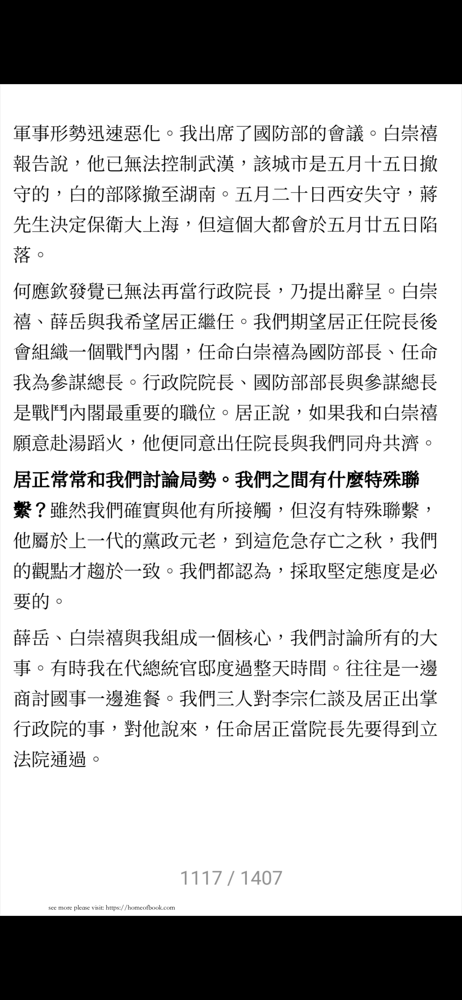
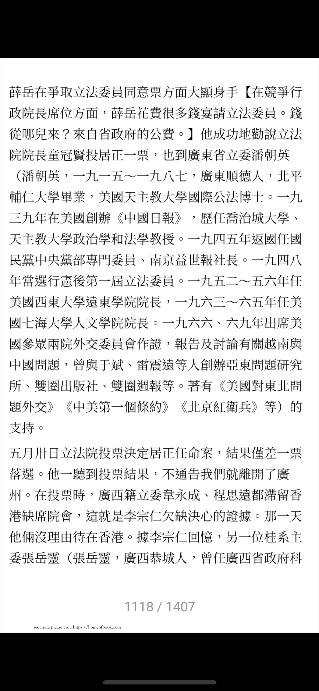
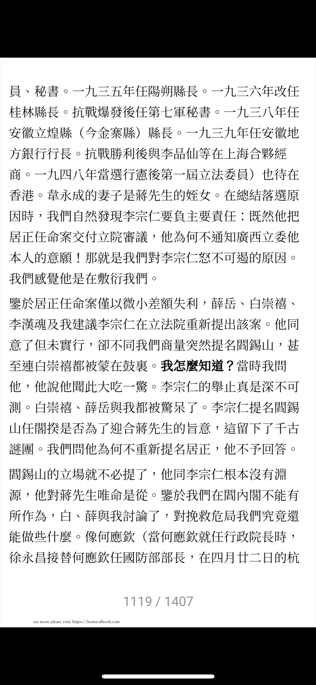
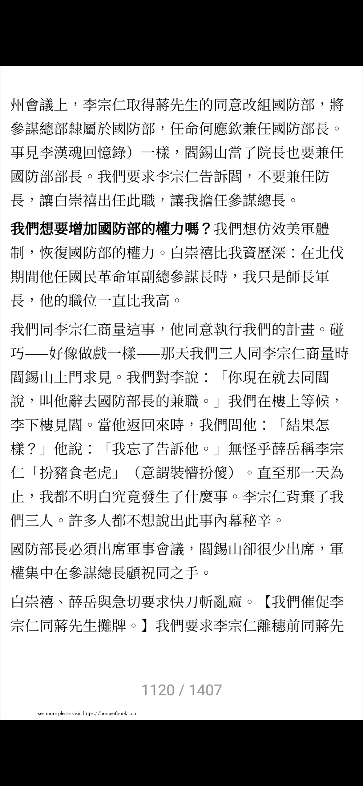
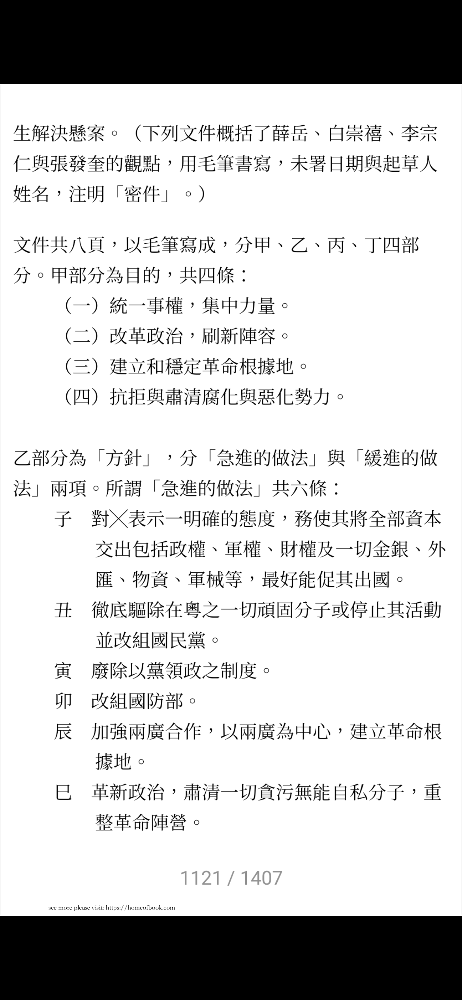
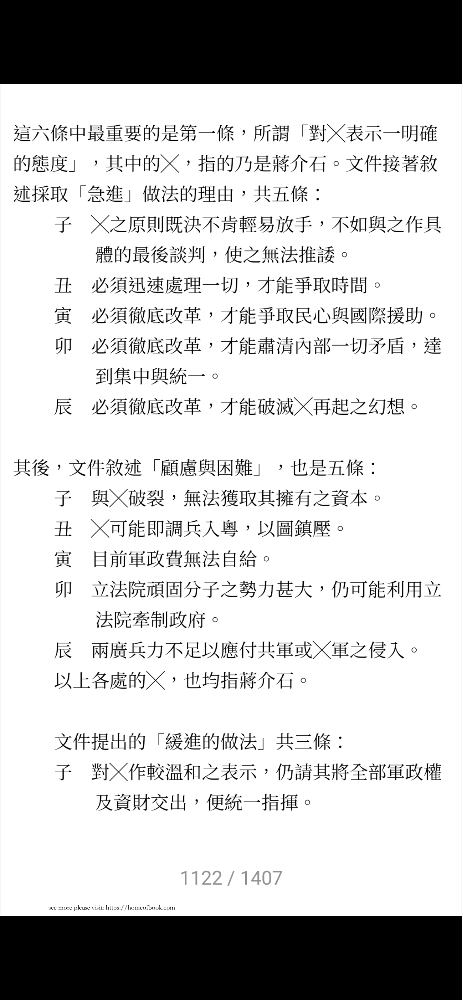
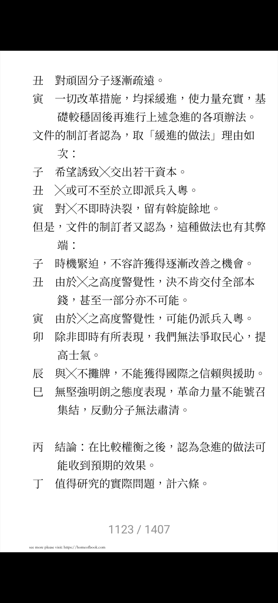
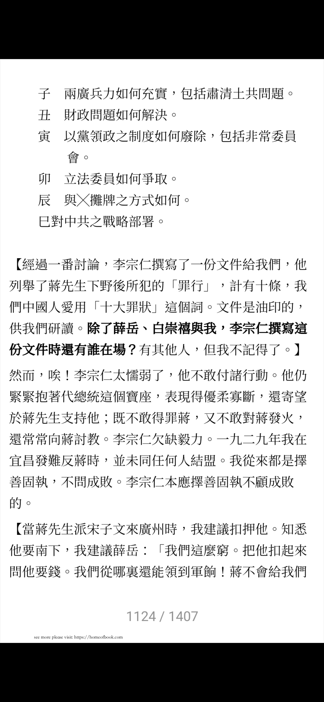
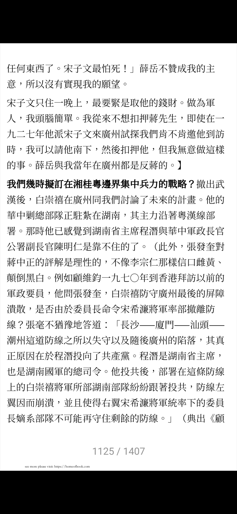
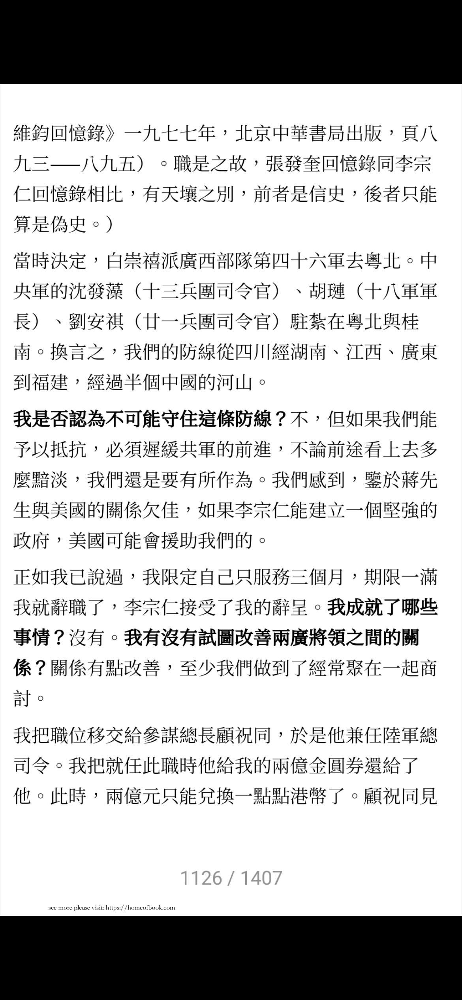
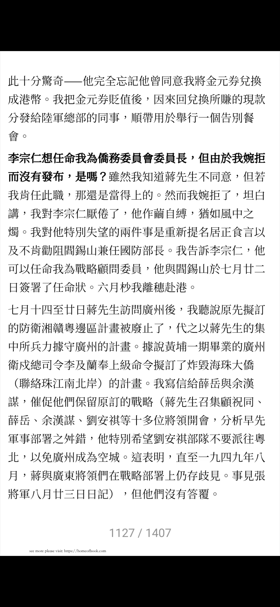
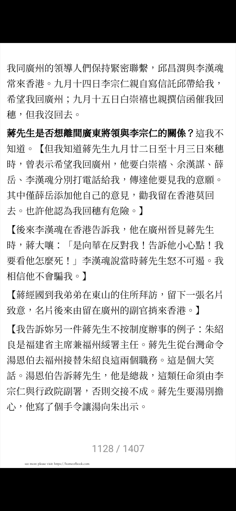
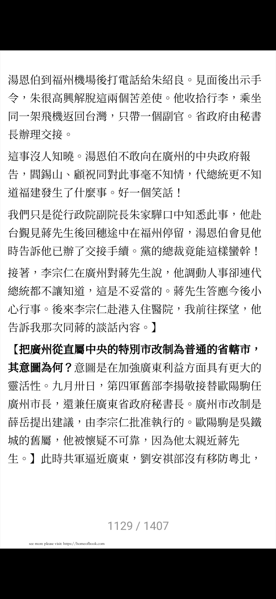
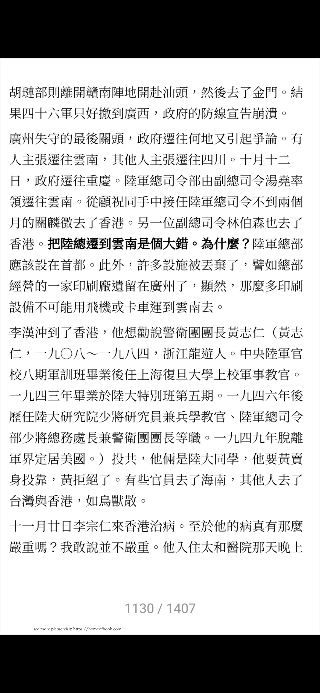
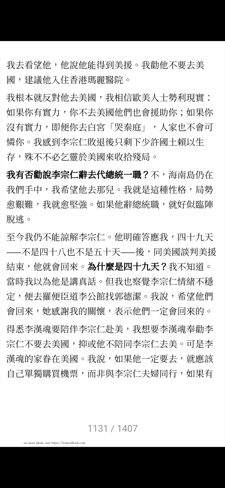
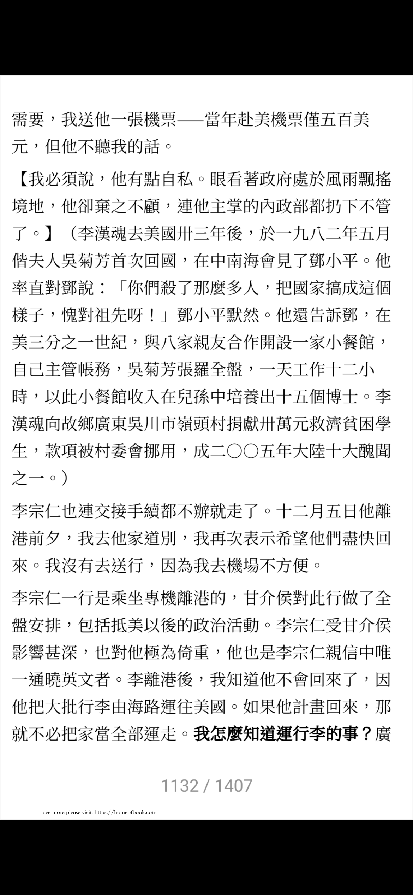
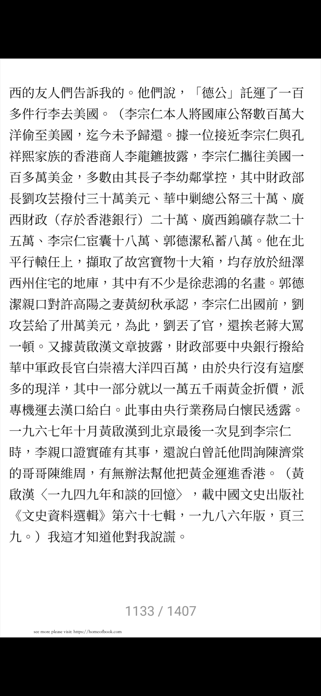
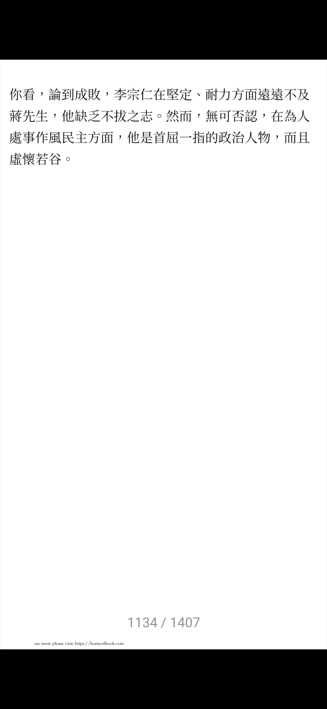
评价李宗仁
你看，论到成败，李宗仁在坚定、耐力方面远远不如蒋先生，他缺乏不拔之志。然而，无可否认，在为人处世作风民主方面，他是首屈一指的政治人物，而且虚怀若谷。
黄绍竑
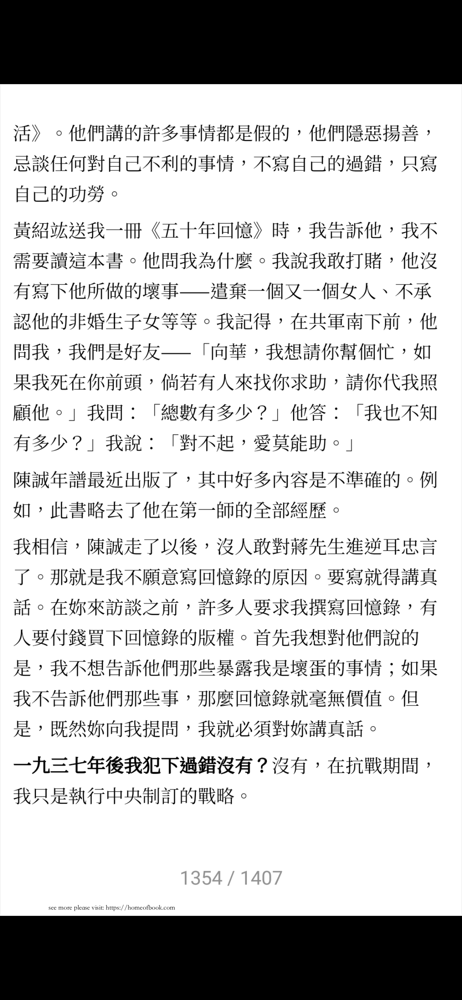
程思远
也做了很龌龊的事情，被张发奎鄙视。
感受
- 张发奎个人不喜欢共产党，但是对共产党员个人确单独看待。他手下的共产党真的很多，可以说比比皆是。
- 张发奎反蒋两次，嫡系的第四军很早就不在自己手里掌握，可以说没有固定地盘，但是在抗日期间仍被委任战区司令长官，长期作为两广的最高负责人，说明张确实有他的威望和能力。
- 张发奎的口述，讲了很多其他人的回忆录不会讲的事情。